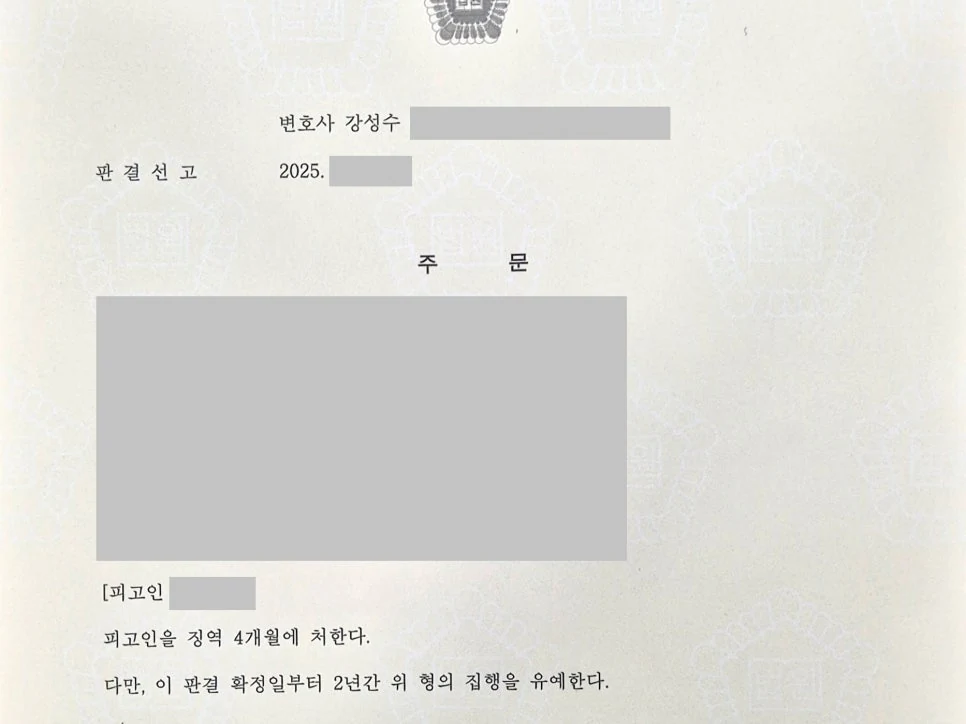

핵심 결과
가짜 전세계약서를 만들어 금융기관에서 대출을 받은 사건은 가볍게 보지 않습니다.
단순 사기보다 죄질이 더 무겁게 평가될 수 있습니다.
문서 위조가 결합되고, 피해자가 금융기관인 경우 실형 가능성이 커집니다.
이번 사건도 사기, 사문서위조, 위조사문서행사 혐의가 함께 적용된 사건이었습니다.
하지만 법무법인 우린은 피해 회복, 범행 경위, 재범 방지 자료를 체계적으로 정리했습니다.
최종 결과는 징역 4개월, 집행유예 2년이었습니다.
| 구분 | 내용 |
|---|---|
| 사건 분야 | 대출사기, 문서위조 |
| 적용 혐의 | 사기, 사문서위조, 위조사문서행사 |
| 피해자 | 금융기관 |
| 가장 큰 위험 | 문서 위조가 결합된 사기 사건으로 실형 가능성 존재 |
| 주요 대응 | 피해 회복, 범행 경위 정리, 재범 방지 자료 제출 |
| 최종 결과 | 징역 4개월, 집행유예 2년 |
사건 개요
의뢰인은 실제로 존재하지 않는 전세계약서를 만든 혐의로 재판을 받게 되었습니다.
문제는 여기서 끝나지 않았습니다.
가짜 계약서를 금융기관에 제출해 대출을 받은 점까지 함께 문제 되었습니다.
적용된 죄명은 세 가지였습니다.
| 죄명 | 의미 |
|---|---|
| 사기 | 금융기관을 속여 대출금을 받은 혐의 |
| 사문서위조 | 실제와 다른 전세계약서를 만든 혐의 |
| 위조사문서행사 | 위조된 계약서를 실제 서류처럼 제출한 혐의 |
문서 위조가 들어간 사기 사건은 재판부가 엄격하게 봅니다.
특히 피해자가 금융기관이면 피해 회복 여부와 재범 가능성을 더 중요하게 봅니다.
의뢰인도 구속 가능성 때문에 큰 불안감을 느끼고 있었습니다.
실형 위험이 컸던 이유
- 단순 사기가 아니라 문서 위조가 함께 문제 되었습니다.
- 피해자가 금융기관이었습니다.
- 대출 과정에서 위조 문서가 실제로 사용되었습니다.
- 피해 회복 여부가 양형에 큰 영향을 주는 사건이었습니다.
이런 사건은 단순히 “반성합니다”라는 말만으로는 부족합니다.
해결 전략
1. 피해 회복 계획을 먼저 세웠습니다
대출사기 사건에서 재판부가 가장 먼저 보는 부분은 피해 회복입니다.
금융기관의 손해가 어느 정도 회복되었는지, 앞으로 어떻게 변제할 수 있는지가 중요합니다.
의뢰인의 상황에서 현실적으로 가능한 변제 계획을 세우고, 피해 회복 노력을 자료로 정리했습니다.
2. 범행 경위를 구체적으로 설명했습니다
문서 위조가 결합된 사건이라고 해서 모두 같은 수준으로 평가되는 것은 아닙니다.
전문적이고 반복적인 사기였는지, 경제적 압박 속에서 벌어진 일시적 범행이었는지에 따라 판단이 달라질 수 있습니다.
이번 사건에서는 범행에 이르게 된 경제적 상황과 사건 전후의 태도를 구체적으로 정리했습니다.
3. 재범 가능성이 낮다는 점을 입증했습니다
집행유예를 받기 위해서는 다시 같은 범행을 하지 않을 환경이 만들어졌다는 점이 중요합니다.
부채 정리 노력, 가족 관계, 생활 기반, 향후 변제 계획을 하나의 흐름으로 묶어 제출했습니다.
재판부가 “사회 안에서 한 번 더 기회를 줄 수 있다”고 판단할 수 있는 근거를 만든 것입니다.
| 대응 항목 | 준비한 내용 |
|---|---|
| 피해 회복 | 금융기관 손해 회복 및 변제 계획 정리 |
| 범행 경위 | 경제적 어려움과 일시적 범행 사정 설명 |
| 반성 자료 | 진정성 있는 반성문과 생활 태도 자료 제출 |
| 재범 방지 | 부채 정리, 가족 부양, 안정된 생활 기반 자료 |
| 변론 방향 | 실형보다 사회 내 교정이 타당하다는 점 강조 |
결과
재판부는 범행 자체가 가볍지 않다고 보았습니다.
다만 피해 회복 노력, 반성 태도, 범행 경위, 재범 방지 자료를 함께 고려했습니다.
그 결과 의뢰인은 실형을 피할 수 있었습니다.
최종 결과
전세계약서 위조를 이용한 대출사기 사건에서 사기, 사문서위조, 위조사문서행사 혐의가 함께 적용되었지만 징역 4개월, 집행유예 2년이 선고되었습니다.
의뢰인은 구속을 피하고 가족의 곁으로 돌아갈 수 있었습니다.
대출사기와 문서위조 사건에서 중요한 점
대출사기 사건은 단순히 돈을 갚겠다는 말만으로 해결되지 않습니다.
재판부는 실제 피해 회복 자료를 봅니다.
문서 위조가 함께 들어간 사건은 더 조심해야 합니다.
위조 문서가 어떻게 만들어졌는지, 누가 주도했는지, 피해 회복은 어느 정도 되었는지, 다시 범행할 위험은 없는지를 종합적으로 봅니다.
처음부터 어떤 자료를 어떤 순서로 준비하느냐가 결과를 바꿀 수 있습니다.
결론
전세계약서 위조 대출사기는 실형 가능성이 있는 무거운 사건입니다.
사기, 사문서위조, 위조사문서행사가 함께 적용되면 재판부의 시선도 엄격해집니다.
하지만 사건을 포기할 필요는 없습니다.
피해 회복, 범행 경위, 재범 방지, 생활 기반을 제대로 정리하면 집행유예 가능성을 검토할 수 있습니다.
사무장·상담실장 없이 변호사가 직접 상담합니다
대출사기와 문서위조 사건은 초기 대응 방향이 중요합니다.
법무법인 우린은 강성수 변호사가 직접 상담하고, 사건 기록 검토부터 서면 작성, 조사 대응, 재판 변론까지 직접 진행합니다.
실형 가능성이 걱정되는 상황이라면 먼저 기록과 피해 회복 가능성을 정확히 확인해야 합니다.
이 글은 일반적인 법률 정보 제공을 위한 자료이며, 개별 사건의 결과를 보장하지 않습니다. 구체적인 대응은 사실관계와 증거에 따라 달라질 수 있습니다.